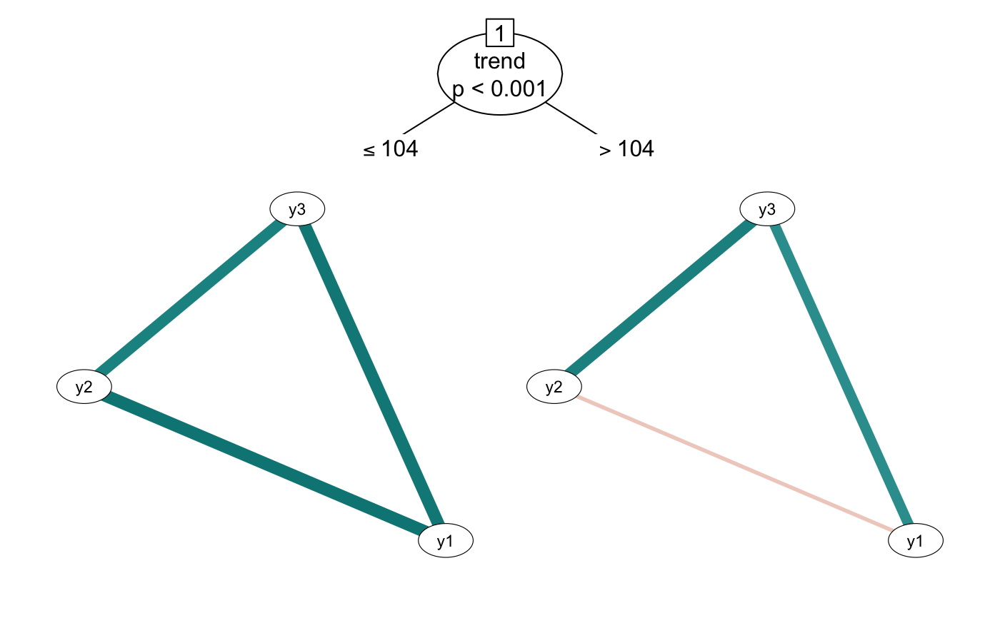

Computes a tree model with networks at the end of branches. Can use model-based recursive partitioning or conditional inference.
Wraps the mob() and ctree() functions from the partykit package.
networktree(...)
# S3 method for default
networktree(
nodevars,
splitvars,
method = c("mob", "ctree"),
model = "correlation",
transform = c("cor", "pcor", "glasso"),
na.action = na.omit,
weights = NULL,
...
)
# S3 method for formula
networktree(
formula,
data,
transform = c("cor", "pcor", "glasso"),
method = c("mob", "ctree"),
na.action = na.omit,
model = "correlation",
...
)additional arguments passed to mob_control (mob)
or ctree_control (ctree)
the variables with which to compute the network. Can be vector, matrix, or dataframe
the variables with which to test split the network. Can be vector, matrix, or dataframe
"mob" or "ctree"
can be any combination of c("correlation", "mean", "variance") splits are determined based on the specified characteristics
should stored correlation matrices be transformed to partial correlations or a graphical lasso for plotting? Can be set to "cor" (default), "pcor", or "glasso"
a function which indicates what should happen when the data
contain missing values (NAs).
weights
A symbolic description of the model to be fit. This
should either be of type y1 + y2 + y3 ~ x1 + x2 with node
vectors y1, y2, and y3 or y ~ x1 + x2
with a matrix response y. x1 and x2 are used as
partitioning variables.
a data frame containing the variables in the model
Jones, P.J., Mair, P., Simon, T., Zeileis, A. (2020). Network trees: A method for recursively partitioning covariance structures. Psychometrika, 85(4), 926-945. https://doi.org/10.1007/s11336-020-09731-4
set.seed(1)
d <- data.frame(trend = 1:200, foo = runif(200, -1, 1))
d <- cbind(d, rbind(
mvtnorm::rmvnorm(100, mean = c(0, 0, 0),
sigma = matrix(c(1, 0.5, 0.5, 0.5, 1, 0.5, 0.5, 0.5, 1), ncol = 3)),
mvtnorm::rmvnorm(100, mean = c(0, 0, 0),
sigma = matrix(c(1, 0, 0.5, 0, 1, 0.5, 0.5, 0.5, 1), ncol = 3))
))
colnames(d)[3:5] <- paste0("y", 1:3)
## Now use the function
tree1 <- networktree(nodevars=d[,3:5], splitvars=d[,1:2])
## Formula interface
tree2 <- networktree(y1 + y2 + y3 ~ trend + foo, data=d)
## plot
plot(tree2)

plot(tree2, terminal_panel = "box")
plot(tree2, terminal_panel = "matrix")
# \donttest{
## Conditional version
tree3 <- networktree(nodevars=d[,3:5], splitvars=d[,1:2],
method="ctree")
## Change control arguments
tree4 <- networktree(nodevars=d[,3:5], splitvars=d[,1:2],
alpha=0.01)
# }